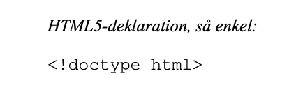

Introduktion
HTML (HyperText Markup Language) är ett standard märkspråk som används för att skapa webbsidor. HTML ger möjlighet att ange ett dokuments struktur (rubriker, styckeindelning m.m.), metainformation (språk, författare, plats i en hierarki) och i viss mån hur dokumentet skall visas. HTML tillåter också att man infogar information av andra typer, eventuellt i andra filer, från början framförallt bilder, senare till exempel datorprogram (java, javascript) och instruktioner för hur sidan skall visas (CSS). Det revolutionerande var dels bilderna, dels hur lätt det var att länka till andra webbsidor. HTML har kontinuerligt utvecklats sedan 1990-talet och på denna webbplats kommer vi att gå igenom ett antal skillnader mellan de senaste två versioner HTML4 och HTML5. Läs mer om HTML5 historik här.
HTML5 är den sista versionen av HTML som publicerars i samarbete mellan W3C och WHATWG (Web Hypertext Application Technology Wokning Group). Det första arbetsutkastet av HTML5 kom i janauri 2008.
Skillnaden mellan HTML5 och HTML4 är att HTML5 bygger vidare på HTML4 men också inkluderar nya element. I den nya versionen är det ett antal nya element som underlättar ide ́n om att skapa sidor genom vad man gör manuellt i XHTML(1,0), samt att göra det lättare för sökmotorer att läsa sidorna och ta reda på olika delar av den, som översta sidan(Header), meny(Navigation), innehåll(Sections) och botten(Footer) eftersom med HTML4 div-taggar var svårt att säga vilken gentemot del av dokumentet det var. HTML5 stöder alla webbläsare som Firefox, Chrome, Safari och Opera. Dessutom har mobila webbläsare som är förinstallerade på iPhones, iPads och Android också utmärkt stöd för HTML5.
Med HTML5 har webbsidor blivit finare och smartare än förut.
DOCTYPE deklarationen är en instruktion till webbläsare om vilken version av HTML sidan är skriven, det är det första i HTML-dokumenten, innan HTML-taggen. Det är tre olika DOCTYPE deklarationer i HTML4 men i HTML5 finns det bara en deklaration.
Grundstruktur för ett HTML5-dokument

Mer om strukturen kan du läsa här.
Felhanteringen har kodifierats och återupptäckts helt på HTML 5. Detta hjälper webbläsarutvecklare att standardisera och minska tid samt pengar för att visa saker på ett konsekvent sätt på en webbsida. Detta är inte möjligt i HTML 4.